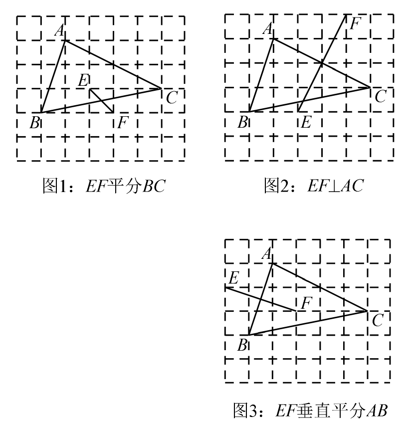

BC 的中点为 (3.5, 2.5)。取 (3, 3)、(4, 2)，其中点恰好是该点。
作图步骤
AC 的方向为 (4, −2)。取 E=(3, 2)、F=(5, 6)，EF 的方向为 (2, 4)，点积为 0。
AB 中点为 (1.5, 3.5)，方向可取 (1, 3)。连接 (0, 4)、(3, 3)，新线段的中点正是 AB 中点，方向 (3, −1) 与 AB 垂直。

BC 的中点为 (3.5, 2.5)。取 (3, 3)、(4, 2)，其中点恰好是该点。
AC 的方向为 (4, −2)。取 E=(3, 2)、F=(5, 6)，EF 的方向为 (2, 4)，点积为 0。
AB 中点为 (1.5, 3.5)，方向可取 (1, 3)。连接 (0, 4)、(3, 3)，新线段的中点正是 AB 中点，方向 (3, −1) 与 AB 垂直。
